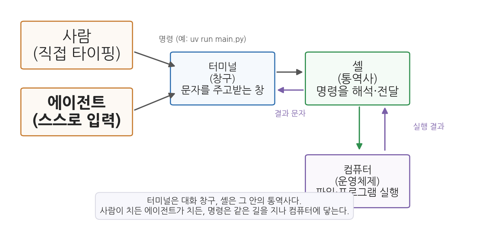
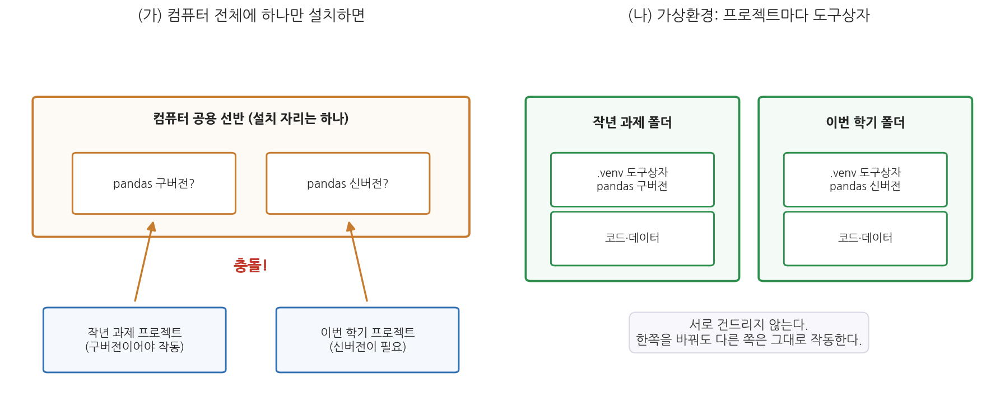
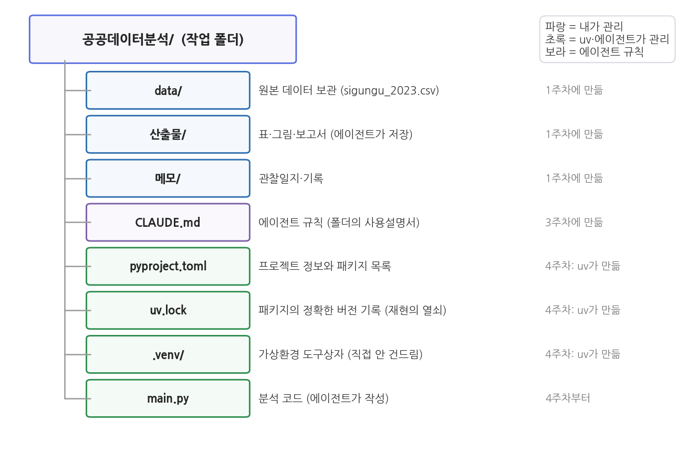

4주차 1회차. 분석 환경 이해하기
우리는 도구를 만들고, 그다음에는 도구가 우리를 만든다. (존 컬킨, 「마셜 매클루언에 대한 스쿨맨의 안내」)
이 장에서 배우는 것
지난 3주 동안 에이전트는 폴더를 만들고, 웹을 검색해 문서를 쓰고, CSV 파일을 열어 값을 찾아 주었다. 그런데 눈치챘을지 모르겠다. 아직 에이전트에게 "그래프를 그려 줘"라거나 "229개 시군구 전체의 평균과 분포를 계산해 줘" 같은 본격적인 분석은 시키지 않았다. 이유가 있다. 여러분의 노트북에 아직 분석 도구가 갖춰지지 않았기 때문이다.
비유하자면 지금까지 우리는 유능한 요리사(에이전트)를 고용해 두고, 장보기 목록 작성이나 식당 예약 같은 일만 시킨 셈이다. 요리사가 실제로 요리를 하려면 주방이 필요하다. 칼과 도마, 화구, 냄비가 제자리에 있어야 한다. 데이터 분석에서 그 주방에 해당하는 것이 분석 환경(analysis environment)이다. 파이썬이라는 화구, pandas라는 칼, matplotlib라는 접시가 내 노트북 안에 설치되어 있어야, 에이전트는 비로소 계산하고 그리는 일을 할 수 있다.
좋은 소식이 있다. 주방을 차리는 일조차 여러분이 직접 하지 않는다. 다음 회차(4주차 2회차)에서 에이전트에게 지시해서 차리게 할 것이다. 다만 그 전에, 에이전트가 무엇을 설치하고 무엇을 만드는지 알아볼 수 있어야 한다. 검증할 수 없는 일은 맡길 수 없다는 것이 이 과목의 원칙이기 때문이다. 이 장은 그 검증의 눈을 기르는 장이다. 구체적으로 다음을 배운다.
- 분석을 웹 챗이 아니라 내 노트북(로컬)에서 하는 이유
- 터미널과 셸이 무엇이고, 왜 에이전트의 작업대인지
- 파이썬과 패키지 생태계의 구조 (pandas, matplotlib를 중심으로)
- 가상환경이 왜 필요하고, uv라는 도구가 무엇을 해 주는지
- 분석 프로젝트의 폴더를 어떻게 구성하는지
이 장은 "에이전트의 일터를 어디에, 어떻게 차릴 것인가"라는 질문을 따라간다.
1.1 일터의 위치를 정한다: 왜 웹 챗이나 Colab이 아니라 내 노트북인가 → 1.2 일터의 문을 이해한다: 터미널과 셸 → 1.3 도구를 이해한다: 파이썬과 패키지 → 1.4 도구를 정리하는 법을 배운다: 가상환경과 uv → 1.5 일터의 방 배치를 정한다: 분석 프로젝트의 폴더 구조.
1.1 왜 내 노트북(로컬)인가: 웹 챗과의 결정적 차이
세 개의 작업 장소
데이터 분석을 "어디서" 할 것인가. 크게 세 가지 선택지가 있다.
첫째는 웹 챗이다. 브라우저에서 ChatGPT나 Claude 웹사이트를 열고, 채팅창에 데이터 파일을 업로드해서 분석을 부탁하는 방식이다. 가장 간편하지만 1주차에서 본 한계가 그대로 있다. 파일을 매번 손으로 올려야 하고, 올릴 수 있는 파일 크기에 제한이 있으며, 대화가 끝나면 작업하던 내용이 사라진다. 분석 결과를 받으려면 다시 손으로 내려받아야 한다. 사람이 AI와 컴퓨터 사이의 전달자 노릇을 계속하는 구조다.
둘째는 클라우드 노트북이다. 대표적으로 구글의 Colab이 있다. 구글이 인터넷 저편에 마련해 둔 컴퓨터를 브라우저로 빌려 쓰면서, 그 위에서 파이썬 코드를 실행하는 서비스다. 파이썬 강의에서 널리 쓰이고, 내 컴퓨터에 아무것도 설치하지 않아도 된다는 장점이 있다. 그러나 빌려 쓰는 컴퓨터라는 점이 발목을 잡는다. 접속이 끊기거나 일정 시간이 지나면 빌린 컴퓨터가 초기화되어, 설치했던 도구와 올려 두었던 데이터가 사라진다. 다음에 다시 접속하면 데이터 업로드부터 다시 시작해야 한다. 게다가 내 데이터를 구글의 서버에 올려 두고 작업하는 방식이므로, 함부로 외부에 올리면 안 되는 자료를 다룰 때는 쓸 수 없다.
셋째가 이 과목의 방식, 곧 로컬(local)이다. 로컬은 "내 컴퓨터 안"이라는 뜻이다. 분석 도구를 내 노트북에 설치하고, 데이터도 내 노트북의 폴더에 두고, 에이전트도 내 노트북의 폴더 안에서 일하게 하는 것이다.
로컬이 에이전트와 만났을 때
로컬 방식은 원래 "설치와 관리가 어렵다"는 큰 단점 때문에 초보자에게 권장되지 않았다. Colab이 교육 현장에서 인기를 얻은 것도 그 어려움을 피하게 해 주었기 때문이다. 그런데 에이전트의 등장으로 사정이 바뀌었다. 설치와 관리라는 어려운 부분을 에이전트가 대신해 줄 수 있게 되면서, 로컬의 장점만 남게 된 것이다. 그 장점을 정리하면 다음과 같다.
첫째, 데이터가 제자리에 있다. 2주차 실습에서 data 폴더에 넣어 둔 sigungu_2023.csv는 지금도 그 자리에 있다. 어디에 다시 올릴 필요 없이 "data 폴더의 파일을 분석해 줘"라고 말하면 된다. 공공기관에서 일하게 될 여러분에게는 이 점이 더 중요해진다. 기관 내부 자료를 외부 서비스에 업로드하는 것은 대부분의 기관에서 보안 규정 위반이다. 자료를 반출하지 않고 내 컴퓨터 안에서 분석하는 능력은 실무에서 선택이 아니라 필수다.
둘째, 작업이 쌓인다. 웹 챗의 대화는 흘러가 버리지만, 로컬의 작업은 파일로 남는다. 오늘 만든 분석 코드, 오늘 그린 그래프, 오늘 정리한 표가 모두 폴더에 저장되고, 다음 주 실습은 그 위에 쌓인다. 1주차에 만든 폴더 하나로 13주를 관통하는 이 교재의 설계 자체가 로컬이기에 가능하다.
셋째, 재현할 수 있다. 분석 결과를 코드와 데이터로 보관하므로, 한 달 뒤에 "그 숫자 어떻게 나온 거죠?"라는 질문을 받아도 같은 코드를 다시 실행해 같은 결과를 보여 줄 수 있다. 이 재현성(reproducibility)은 증거기반 정책의 생명선이다. 재현할 수 없는 분석은 근거가 아니라 주장에 불과하다. 재현성 이야기는 1.4절에서 다시 이어진다.
표 4-1. 세 가지 작업 장소의 비교
| 구분 | 웹 챗 | 클라우드 노트북 (Colab) | 로컬 (이 과목) |
|---|---|---|---|
| 데이터의 위치 | 매번 채팅창에 업로드 | 구글 서버에 업로드 | 내 노트북의 폴더 |
| 작업의 보존 | 대화가 끝나면 흩어짐 | 접속이 끊기면 환경 초기화 | 파일로 계속 쌓임 |
| 민감 자료 | 외부 전송 불가피 | 외부 전송 불가피 | 데이터 파일은 내 컴퓨터에 |
| 환경 구축 | 필요 없음 | 필요 없음 | 필요함 (에이전트에게 시킨다) |
| 에이전트의 작업 범위 | 대화창 안 | 노트북 화면 안 | 폴더 전체 (파일·터미널·코드) |
데이터 파일과 분석 작업은 내 노트북에서 이루어지지만, Claude Code의 두뇌(언어모델)는 인터넷 너머 Anthropic의 서버에 있다. 여러분이 입력한 지시, 에이전트가 열어 본 파일의 내용, 실행 결과는 모델에게 전달된다. 따라서 개인정보(주민등록번호, 실명 명단 등)가 든 파일은 에이전트에게 열게 하지 않는 것이 원칙이다. 이 수업의 실습 데이터는 모두 공개된 공공데이터이므로 문제가 없지만, 원칙 자체는 지금부터 기억해 두자. 자세한 윤리 문제는 13주차에서 다룬다.
1.2 터미널과 셸: 에이전트의 작업대
마우스의 길과 문자의 길
1주차 실습에서 VSCode 화면을 익힐 때, 아래쪽 패널의 터미널은 "에이전트가 일하는 모습을 구경만 하면 된다"고 넘어갔다. 이제 그 정체를 알아볼 차례다.
컴퓨터에게 일을 시키는 길은 두 갈래다. 하나는 우리에게 익숙한 마우스의 길이다. 바탕화면에서 폴더를 더블클릭해 열고, 파일을 끌어다 옮기고, 아이콘을 눌러 프로그램을 실행한다. 이런 방식을 그래픽 사용자 인터페이스(GUI, graphical user interface)라고 부른다. 다른 하나는 문자의 길이다. 검은 창에 cd data라고 치면 data 폴더로 이동하고, dir라고 치면 폴더 안의 파일 목록이 문자로 출력된다. 이를 명령줄 인터페이스(CLI, command line interface)라고 부른다.
패스트푸드점에 비유하면 GUI는 그림 메뉴를 손가락으로 누르는 키오스크이고, CLI는 카운터에서 직원에게 말로 주문하는 방식이다. 키오스크는 배우기 쉽지만 화면에 있는 버튼만 누를 수 있다. 말로 하는 주문은 처음엔 어색해도 "피클 빼고, 소스는 두 배로"처럼 훨씬 정밀하고 자유로운 요청이 가능하다.
터미널은 창구, 셸은 통역사
문자의 길에는 두 등장인물이 있다. 터미널(terminal)은 문자를 입력하고 출력을 받아 보는 창 자체다. VSCode 아래쪽 패널에 열리는 검은 화면이 바로 터미널이다. 셸(shell)은 그 창 뒤에서 일하는 통역사다. 사용자가 입력한 명령 문자를 해석해서 운영체제(Windows)에 전달하고, 실행 결과를 다시 문자로 창에 돌려준다. 여러분의 Windows 노트북에서 기본 통역사는 PowerShell이라는 셸이다.

그림 4-1을 읽어 보자. 왼쪽의 두 사용자(사람, 에이전트)가 명령을 입력하면, 명령은 터미널(창구)을 거쳐 셸(통역사)에게 전달되고, 셸이 이를 해석해 컴퓨터(운영체제)에게 시킨다. 실행 결과는 반대 방향으로 돌아와 터미널 창에 문자로 찍힌다. 여기서 눈여겨볼 것은 왼쪽 위와 왼쪽 아래가 같은 문에 닿는다는 점이다. 사람이 손으로 치는 명령과 에이전트가 스스로 입력하는 명령은 완전히 같은 길을 지난다. 2주차에서 배운 에이전트의 도구 중 "터미널 실행"이 바로 이 길이다.
왜 에이전트는 CLI를 좋아하는가
에이전트가 마우스가 아니라 터미널로 일하는 데는 분명한 이유가 있다.
첫째, CLI는 문자로 시작해 문자로 끝난다. 명령도 문자, 결과도 문자다. 그리고 2주차에서 배웠듯 언어모델은 문자를 읽고 쓰는 기계다. "화면 어디쯤의 버튼을 클릭한다"는 행동보다 "dir 명령을 보내고 출력 문자를 읽는다"는 행동이 에이전트에게 압도적으로 자연스럽다.
둘째, 문자 명령은 기록되고 재현된다. 마우스 조작은 "아까 뭘 눌렀더라"를 남기지 않지만, 터미널 명령은 한 줄 한 줄이 로그로 남는다. 에이전트가 무슨 짓을 했는지 학생이 사후에 확인할 수 있고(검증), 같은 명령을 다시 실행하면 같은 작업이 반복된다(재현). 이 과목이 중시하는 두 가치가 모두 CLI 쪽에 있다.
안심해도 되는 점 하나. 여러분이 터미널 명령을 외울 필요는 없다. 명령을 만들고 입력하는 것은 에이전트의 일이다. 여러분의 일은 에이전트가 승인을 요청할 때 그 명령이 대략 무슨 일을 하는지 알아보는 것이다. 2주차 실습에서 "승인 요청은 에이전트가 지금 무엇을 하려는지 알려 주는 창"이라고 배웠다. 이 장과 다음 실습을 지나면 그 창에 뜨는 문자들이 조금씩 읽히기 시작할 것이다.
터미널(terminal)은 문자로 명령을 입력하고 결과를 출력받는 창이다. VSCode에서는 아래쪽 패널에 열린다.
셸(shell)은 터미널에 입력된 명령을 해석해 운영체제에 전달하고 결과를 돌려주는 프로그램이다. Windows의 기본 셸은 PowerShell이다. 에이전트는 이 터미널·셸을 통해 프로그램 설치, 코드 실행 같은 실제 행동을 수행한다.
1.3 Python과 패키지 생태계 (pandas, matplotlib를 중심으로)
파이썬: 데이터 분석의 공용어
파이썬(Python)은 프로그래밍 언어의 하나다. 프로그래밍 언어는 여러 가지가 있지만, 데이터 분석의 세계에서 파이썬은 사실상의 공용어가 되었다. 문법이 사람의 언어에 가까워 읽기 쉽고, 데이터 분석용 도구가 가장 풍부하게 쌓여 있기 때문이다. 에이전트에게 "분석해 줘"라고 하면 에이전트가 거의 언제나 파이썬 코드를 짜는 것도 이 때문이다. 학습데이터에 파이썬 분석 코드가 가장 많이 쌓여 있으니, 에이전트가 가장 잘 다루는 언어이기도 하다.
"엑셀로도 평균은 구할 수 있지 않나"라는 의문이 들 수 있다. 맞다. 그러나 세 가지 지점에서 갈라진다. 엑셀 작업은 마우스 클릭의 연속이라 "어떤 순서로 무엇을 눌렀는지"가 남지 않지만, 파이썬 분석은 코드 파일로 남아 언제든 다시 실행할 수 있다(재현성). 수십만 행이 넘어가면 엑셀은 버거워하지만 파이썬은 감당한다(규모). 그리고 매달 반복되는 분석을 엑셀에서는 매달 손으로 되풀이해야 하지만, 파이썬 코드는 한 번 만들면 데이터만 바꿔 재실행하면 된다(자동화).
패키지: 남이 만들어 둔 도구를 가져다 쓴다
방금 설치한 스마트폰을 떠올려 보자. 전화, 문자, 카메라 같은 기본 기능만 있다. 지도가 필요하면 지도 앱을, 은행 업무가 필요하면 은행 앱을 앱스토어에서 내려받는다. 파이썬도 똑같다. 순정 파이썬은 사칙연산과 파일 읽기 같은 기본기만 갖추고 있다. 표 계산, 그래프, 통계 같은 전문 기능은 패키지(package)라는 앱을 내려받아 장착한다.
패키지는 전 세계 개발자들이 만들어 무료로 공개한 파이썬 도구 묶음이다. 파이썬의 앱스토어에 해당하는 곳이 PyPI(파이썬 패키지 색인)라는 저장소이며, 여기에 수십만 개의 패키지가 등록되어 있다. 우리는 그중 검증된 소수의 유명 패키지만 쓴다. 이 과목의 주연급 패키지는 다음 네 개다.
표 4-2. 이 과목의 핵심 패키지
| 패키지 | 역할 | 비유 |
|---|---|---|
| pandas | 표 형태 데이터를 읽고, 자르고, 집계한다 | 코드로 조작하는 초강력 엑셀 시트 |
| matplotlib | 그래프를 그린다 | 그림 도구 세트 |
| seaborn | matplotlib 위에서 통계 그래프를 더 쉽고 보기 좋게 그린다 | 그림 도구 세트의 고급 스텐실 |
| koreanize-matplotlib | 그래프의 한글 깨짐을 막는다 | 한글 글꼴 어댑터 |
pandas가 다루는 표 하나를 데이터프레임(DataFrame)이라 부른다. 우리가 가진 sigungu_2023.csv를 pandas로 읽으면 229행(시군구) 12열(총인구, 고령인구비율 등)의 데이터프레임이 되고, 여기에 "총인구 열의 평균을 구하라", "고령인구비율이 높은 순으로 정렬하라" 같은 명령을 한 줄씩 내릴 수 있다. matplotlib는 그 결과를 그림으로 옮긴다. 사실 이 교재의 개념도들(그림 4-1을 포함해)도 전부 matplotlib로 그린 것이다. 다만 matplotlib는 기본 상태에서 한글 글꼴을 찾지 못해 한글이 네모(□)로 깨지는 유명한 문제가 있는데, koreanize-matplotlib라는 작은 패키지를 함께 설치하면 해결된다.
코드를 짜는 것은 에이전트의 일이지만, "알아보는 눈"을 위해 딱 세 줄만 미리 구경해 두자. 다음은 에이전트가 요약통계를 낼 때 쓰는 전형적인 코드다.
import pandas as pd # pandas를 pd라는 별명으로 가져온다
df = pd.read_csv("data/sigungu_2023.csv") # CSV 파일을 읽어 df라는 표로 만든다
print(df.describe()) # 열별 요약통계(평균, 최소, 최대 등)를 출력한다
첫 줄의 import가 바로 "패키지를 꺼내 드는" 동작이다. 설치되지 않은 패키지를 import하면 "그런 모듈이 없다"는 오류(ModuleNotFoundError)가 난다. 다음 실습에서 이 오류를 실제로 만나 볼 것이다.
패키지(package)는 특정 기능(표 계산, 그래프 등)을 위해 다른 사람들이 만들어 공개한 파이썬 코드 묶음이다. 스마트폰의 앱처럼 필요한 것을 내려받아 설치하며, 설치된 패키지는 코드에서
import로 불러 쓴다.
1.4 가상환경과 uv: 재현 가능한 분석의 출발점
"제 컴퓨터에서는 되는데요" 문제
패키지를 설치할 곳이 필요하다. 가장 단순한 방법은 컴퓨터 전체에 하나씩 설치하는 것이다. 그런데 이 방법은 곧 벽에 부딪힌다. 패키지는 계속 개량되어 버전(version)이 올라가는데, 프로젝트마다 필요한 버전이 다를 수 있기 때문이다.

그림 4-2의 왼쪽(가)이 그 문제다. 컴퓨터 공용 선반에는 pandas를 놓을 자리가 하나뿐인데, 작년에 만든 프로젝트는 구버전에서만 돌아가고 이번 학기 프로젝트는 신버전을 요구한다면 어느 쪽을 설치해도 다른 쪽이 깨진다. 신버전으로 바꾸는 순간 작년 프로젝트는 "분명히 작년엔 됐는데" 상태가 된다. 협업이면 문제가 더 커진다. 내 컴퓨터의 패키지 버전과 동료 컴퓨터의 버전이 다르면, 같은 코드가 내 쪽에서만 돌고 동료 쪽에서는 오류를 낸다. 개발자들 사이에서 악명 높은 "제 컴퓨터에서는 되는데요" 문제다.
해법이 그림의 오른쪽(나), 가상환경(virtual environment)이다. 패키지를 컴퓨터 공용 선반이 아니라 프로젝트 폴더마다 하나씩 딸린 전용 도구상자에 설치하는 것이다. 프로젝트 폴더 안에 .venv라는 이름의 폴더가 생기고 그 안에 이 프로젝트 전용 파이썬과 패키지들이 들어간다. 작년 폴더의 도구상자와 올해 폴더의 도구상자는 서로를 전혀 모른다. 한쪽을 바꿔도 다른 쪽은 멀쩡하다.
가상환경(virtual environment)은 프로젝트 폴더마다 독립적으로 마련하는 파이썬 실행 환경이다. 어떤 파이썬 버전과 어떤 패키지들을 쓰는지가 프로젝트 단위로 격리되므로, 프로젝트끼리 버전이 충돌하지 않고, 환경 전체를 다른 컴퓨터에서 그대로 재현할 수 있다.
uv: 환경 관리를 한 도구로
전통적으로 파이썬 환경 관리는 초보자의 첫 관문이자 최대 좌절 지점이었다. 파이썬 설치 따로, 가상환경 생성 따로, 패키지 설치 도구 따로, 각각 다른 명령을 외워야 했다. 이 과목은 그 복잡함을 우회한다. uv라는 도구 하나가 파이썬 설치, 가상환경 생성, 패키지 설치·기록을 전부 담당한다. uv는 Astral이라는 회사가 만든 공개 도구로, 빠른 속도와 단순한 사용법 덕분에 최근 파이썬 생태계의 표준으로 빠르게 자리 잡았다. uv의 사용법은 공식 문서(docs.astral.sh/uv)에 정리되어 있으며, 이 교재의 서술도 이를 따른다.
uv에서 여러분이 알아볼 줄 알아야 하는 명령은 딱 세 개다.
표 4-3. uv의 세 가지 기본 명령
| 명령 | 하는 일 | 결과로 생기는 것 |
|---|---|---|
uv init |
이 폴더를 uv 프로젝트로 만든다 | pyproject.toml(프로젝트 정보), main.py(시작용 코드 파일) 등 |
uv add pandas |
패키지를 이 프로젝트에 추가한다 | pyproject.toml에 이름 기록, uv.lock에 정확한 버전 기록, .venv에 실제 설치 |
uv run main.py |
이 프로젝트의 가상환경으로 코드를 실행한다 | 환경을 자동 점검·동기화한 뒤 실행한 결과 |
세 명령이 만들어 내는 파일들의 역할 분담이 중요하다. pyproject.toml은 "이 프로젝트에는 pandas와 matplotlib가 필요하다"는 필요 목록이다. 요리로 치면 재료 목록이다. uv.lock은 한 걸음 더 나아가 "실제로 설치된 것은 pandas 몇 점 몇 버전, 그것이 의존하는 numpy 몇 점 몇 버전"까지 못 박아 둔 정밀 기록이다. 재료 목록이 아니라, 정확한 상표와 중량까지 적은 영수증이다. .venv 폴더는 그 영수증대로 실제 도구가 들어 있는 도구상자다.
이 세 파일 덕분에 재현이 가능해진다. 프로젝트 폴더(정확히는 pyproject.toml과 uv.lock)를 다른 컴퓨터로 가져가서 uv run을 실행하면, uv가 영수증(uv.lock)을 읽고 똑같은 버전들을 알아서 설치한 뒤 코드를 돌린다. "제 컴퓨터에서는 되는데요"가 "어느 컴퓨터에서든 됩니다"로 바뀌는 순간이다. 1.1절에서 말한 재현성이 구호가 아니라 파일 두 개로 구현되는 것이다.
파이썬 코드는 그냥
python main.py로도 실행할 수 있다. 그런데 이렇게 실행하면 컴퓨터 공용 선반의 파이썬이 나서기 때문에, 도구상자(.venv)에 설치해 둔 pandas를 찾지 못해 오류가 난다. uv run main.py는 실행 전에 "이 프로젝트의 도구상자가 기록(uv.lock)과 일치하는가"를 먼저 확인하고, 어긋나 있으면 맞춘 다음, 도구상자의 파이썬으로 실행한다. 실행할 때마다 환경 점검이 자동으로 이루어지는 셈이다. 그래서 이 과목의 규칙은 단순하다. 파이썬 실행은 언제나 uv run으로 한다. 이 규칙은 다음 실습에서 CLAUDE.md에도 적어 둘 것이다.
여기서도 역할 분담을 분명히 하자. uv init이니 uv add니 하는 명령을 직접 치는 것은 에이전트다. 여러분이 할 일은 두 가지다. 에이전트가 이 명령들의 실행 승인을 요청할 때 무엇을 하려는 것인지 알아보는 것, 그리고 작업이 끝난 뒤 pyproject.toml을 열어 필요한 패키지가 제대로 기록되었는지 확인하는 것이다.
1.5 분석 프로젝트의 폴더 구조: 데이터·코드·산출물
"최종_진짜최종_수정2.hwp"를 피하려면
컴퓨터를 좀 써 본 사람이라면 이런 폴더를 하나쯤 갖고 있다. 바탕화면에 파일이 수십 개 흩어져 있고, "보고서_최종.hwp" 옆에 "보고서_최종_진짜최종.hwp"와 "보고서_최종_진짜최종_수정2.hwp"가 나란히 있는 폴더다. 어느 것이 진짜 최종인지는 본인도 모른다. 혼자 쓰는 문서 폴더라면 웃고 넘길 일이지만, 데이터 분석 프로젝트에서 이런 상태는 사고로 직결된다. 원본 데이터가 어느 파일인지, 보고서의 그래프가 어떤 코드에서 나왔는지 아무도 답할 수 없게 되기 때문이다.
그래서 분석 프로젝트는 시작할 때 방 배치를 정한다. 원칙은 세 가지다.
첫째, 원본 데이터는 data 폴더에 두고 절대 수정하지 않는다. 원본은 분석의 최종 근거다. 정제나 가공이 필요하면 사본을 만들어 작업하고, 원본은 처음 받은 그대로 보존한다. 에이전트가 실수로(또는 지시를 오해해서) 원본을 덮어쓰면 되돌릴 길이 없다.
둘째, 코드와 산출물을 분리한다. 코드(main.py 등)는 산출물을 만들어 내는 기계이고, 산출물(표, 그림, 보고서)은 그 기계가 찍어 낸 제품이다. 제품은 산출물 폴더에 모은다. 이렇게 나누면 "이 그래프 어떻게 만들었죠?"라는 질문에 "이 코드가 만들었습니다"라고 파일로 답할 수 있다.
셋째, 산출물은 언제든 버리고 다시 만들 수 있게 유지한다. 데이터(원본)와 코드만 있으면 산출물은 전부 재생산 가능해야 한다. 거꾸로 말해, 코드 없이 손으로만 만든 산출물은 재현이 불가능하므로 이 구조에서는 이물질이다.
우리 폴더의 완성된 모습

그림 4-3은 다음 실습을 마쳤을 때 여러분의 공공데이터분석 폴더가 갖게 될 모습이다. 위에서부터 읽어 보자. data, 산출물, 메모 세 폴더는 1주차 실습에서 에이전트에게 시켜 만든 것이고, CLAUDE.md는 3주차에서 만든 이 폴더의 규칙 파일이다. 그 아래 초록색 항목들(pyproject.toml, uv.lock, .venv, main.py)이 다음 실습에서 uv와 에이전트가 만들어 낼 새 식구다. 오른쪽 범례가 보여 주듯 초록색 항목은 uv와 에이전트가 관리하며, 여러분이 내용을 직접 고칠 일은 없다. 특히 .venv 폴더는 안에 수천 개의 파일이 들어 있는 도구상자 내부이므로 열어서 만질 필요도, 이유도 없다.
이 방 배치를 에이전트에게도 알려 주어야 한다. 3주차에서 배운 CLAUDE.md가 바로 그 자리다. "원본 데이터는 data 폴더에 있으며 수정하지 말 것, 그림과 표는 산출물 폴더에 저장할 것" 같은 규칙을 CLAUDE.md에 적어 두면, 에이전트는 새 대화를 열 때마다 이 규칙을 읽고 지킨다. 매번 말로 반복할 필요가 없어진다. 폴더 구조는 사람의 정리 습관인 동시에, 에이전트에게 주는 상시 지시이기도 한 것이다.
에이전트는 산출물을 엉뚱한 위치에 저장하기도 한다. 그림을 산출물 폴더가 아니라 폴더 맨 위에 만들거나, data 폴더 안에 가공 파일을 섞어 넣는 식이다. 작업이 끝나면 탐색기에서 "새 파일이 어디에 생겼는가"를 확인하는 습관을 들이자. 파일이 제자리에 있는지 보는 것은 몇 초면 되지만, 몇 주 뒤 뒤섞인 폴더를 정리하는 데는 몇 시간이 든다.
요약
데이터 분석의 작업 장소로 이 과목은 웹 챗도 클라우드 노트북도 아닌 로컬(내 노트북)을 택한다. 데이터가 제자리에 머물고(보안), 작업이 파일로 쌓이며(축적), 코드와 데이터로 언제든 같은 결과를 다시 만들 수 있기(재현성) 때문이다. 로컬의 약점이던 환경 구축의 어려움은 에이전트가 대신 짊어진다. 에이전트는 터미널이라는 문자 창구에서 셸이라는 통역사를 통해 컴퓨터에 명령을 내리며, 문자로 오가는 이 방식은 기록과 재현이 가능해 에이전트와 검증에 모두 알맞다. 분석의 도구는 파이썬과 그 패키지들이다. 표 계산의 pandas, 그래프의 matplotlib와 seaborn, 한글 깨짐을 막는 koreanize-matplotlib가 이 과목의 주연이다. 패키지는 컴퓨터 전체가 아니라 프로젝트마다 딸린 가상환경(.venv)에 설치하며, uv라는 도구가 프로젝트 생성(uv init), 패키지 추가(uv add), 실행(uv run)을 도맡는다. 필요 목록인 pyproject.toml과 정밀 기록인 uv.lock 덕분에 환경째 재현이 가능해진다. 마지막으로 프로젝트 폴더는 원본 데이터(불변)·코드·산출물을 분리해 배치하고, 그 규칙을 CLAUDE.md에 적어 에이전트도 지키게 한다.
연습문제
4-1. 작업 장소 고르기. 다음 세 상황에서 웹 챗, 클라우드 노트북, 로컬 중 어느 방식이 적절한지 고르고 이유를 한 문장씩 써 보라. (a) 카페에서 친구와 대화하다가 "합계출산율이 뭐야?"가 궁금해졌다. (b) 구청 인턴으로 일하며 내부 복지 신청자 명단 데이터로 통계를 내야 한다. (c) 한 학기 동안 같은 데이터를 계속 다듬어 최종 보고서를 만들어야 한다.
4-2. 파일의 역할 맞히기. 다음 설명이 가리키는 것을 pyproject.toml, uv.lock, .venv 중에서 고르라. (a) 실제 파이썬과 패키지들이 설치되어 들어 있는 도구상자 폴더. 직접 열어 볼 일은 없다. (b) "이 프로젝트에는 pandas가 필요하다"처럼 필요한 패키지의 이름을 적은 목록. (c) 설치된 모든 패키지의 정확한 버전을 못 박아 둔 기록. 다른 컴퓨터에서 환경을 똑같이 재현하는 열쇠.
4-3. 사고 예방 훈련. 후배가 분석 프로젝트를 이렇게 쓰고 있다. 원본 CSV를 열어 이상한 값을 직접 지우고 저장했고, 완성된 그래프는 카카오톡 "나에게 보내기"로만 보관했으며, 코드는 "어차피 에이전트가 다시 짜 주니까" 삭제했다. 이 사용법이 1.5절의 세 원칙 중 무엇을 각각 어겼고, 나중에 어떤 곤란을 겪게 될지 설명해 보라.